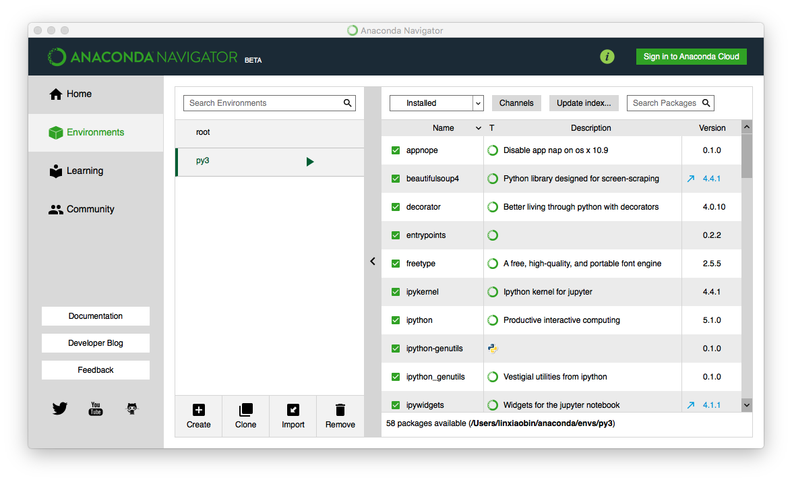
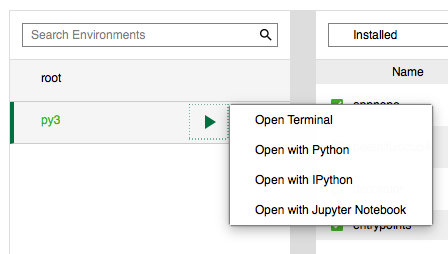
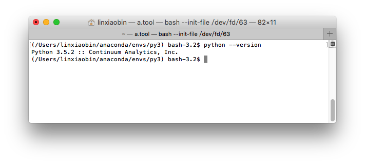
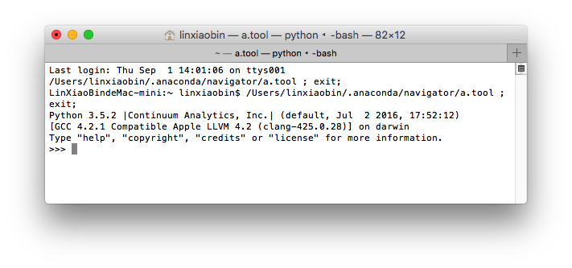

开发工具
Python 有不少开发工具，因涉猎较少，这里就只介绍使用 Sublime Text3 搭建 Python IDE。
开始使用 Sublime Text 进行一些简单的文本编辑已经是好几年前的事情，那时候选择它的理由是跨平台，默认UTF8编码，可以很方便的在 Windows 和 Mac 两个平台同步编辑文本，自从一年多前开始使用 ST3 的插件功能，对它的喜爱也就一发不可收拾了。
ST 最原始的状态只是一个简单的编辑器，但是它的插件扩展功能十分强大，特别是 ST3 对插件的支持比起 ST2 有了很大的提升。现在 ST3 经过一些简单定制，就可以成为各种语言的 IDE，比如 NodeJs、React Native、Html5、C++ 等，当然也包括 Python。除了可以使用 ST3 编码，它还能编译、执行程序，简直是程序员必备的开发利器。
Anaconda
Anaconda for ST3 集成了许多 Python 开发需要使用的插件，包括 PyFlakes、pep8、McCabe 等，Anaconda 集成了 Python 的语法提醒、语法检查、代码格式化、编译、运行等功能。Anaconda 让一切都变得很简单，安装之后只需要简单的几个配置就可以得到一个顺手的 Python IDE。(ST 插件的安装方法在以前的博文中已经讲过，这里不做赘述，有需要的自行翻查。)
支持代码提示
在
~/Library/Application Support/Sublime Text 3/Packages/User目录下创建 Python.sublime-settings 文件，内容如下{"auto_complete_triggers": [{"selector": "source.python - string - comment - constant.numeric","characters": "."}]}对应Windows的目录是：
C:\Users\Administrator\AppData\Roaming\Sublime Text 3\Packages\UserAnaconda 的个性配置
配置入口
Sublime Text > Preferences > Package Settings > Anaconda > Setting-User配置内容
/*Anaconda user settings*/{/*If complete_parameters is true, anaconda will add function and classparameters to its completions.If complete_all_parameters is true, it will add all the possibleparameters, if it's false, it will add only required parameters*/"complete_parameters": true,"complete_all_parameters": true,/*Default python interpreter.This can (and should) be overridden by project settings*/"python_interpreter": "/Users/linxiaobin/anaconda/envs/py3/bin/python","pep8_ignore":["E501"]}其中
"pep8_ignore":["E501"]是用于关闭语法检查时对字符数的限制，Python 语法标准建议单行字符不超过 79 个字符，会有这样的限制肯定是有它的道理，但是在实际开发中，个人比较不喜欢这样的限制，大概是做 iOS 开发习惯了长命名，一下子转不过来。默认情况下，一旦字符数超过80就会出现一些边框将该行圈住，表示语法不符合标准，这不仅会影响强迫症程序猿的心情，还会导致我们忽略重要的语法错误，果断屏蔽。hello world
配置好环境，你是不是已经迫不及待的想练练手了呢，那就来个最简单的 hello world 吧。
- 新建
hello.py文件 - 用 ST 打开
hello.py文件 - 编码
print('Hello world!') 运行
⌘+B，第一次运行在顶部会弹出框选择 Python 的运行环境，建议选择 Anaconda 自带的，如果选了其他的后面想改回来，可以使用⇧+⌘+B重新选择。如果你运气不差，可以看到 ST 下方的控制台输出了
Hello world!，如果你运气不好，就需要自行搜索解决方案了，因为笔者没有在这里遇到问题，也就没有建议可以给读者了。
- 新建
中文支持问题
字符串作为一种特殊的数据类型，它有个比较麻烦的问题，那就是它的编码问题，Python2 默认的编码格式是 ASCII，到 Python3 时已经改为 Unicode，也就是说 Python 的字符串支持多语言，这是一个比较大的变化。
字符串编码问题会出现在三个阶段：存储、编辑、运行。通常编辑器会以 UTF-8 存储源码，编辑器读取文件时将其转化成 Unicode 字符存到内存里，编辑完成后再转成 UTF-8 存储到文件里。这里要提一下笔者在开发时遇到的一个环境问题，通过控制台执行 Python3 的程序输出中文正常，而通过 ST3 的控制台运行输出中文时会因编码异常而导致程序退出：
|
从这一现象中笔者推测 ST3 的编译和运行环境的编码格式不同于控制台，经过排查，最终定位到这是 Anaconda 自带的 Python 编译脚本不兼容中文导致的，因为没有找到修改 Anaconda 对应配置的方法，只好另外建一个 ST3 的 Python 编译环境，方法如下：
Tools > Build System > New Build System …
输入以下内容：
|
第一次切换编译环境可使用 ⌘+⇧+B 快捷键，之后继续使用 ⌘+B 编译即可。
注：env 配置适用于 Python3，Python2 配置为 "encoding": "cp936"（备用，未测试）
快捷键
- ⌘+B 编译执行
- ⌘+⇧+B 修改编译环境
- ⌘+R 搜索当前文件下的方法
前两个快捷之前已经提过，这里主要讲一下 ⌘+R，该快捷可以列出当前文件的所有类、方法的定义，支持模糊搜索，文件较大的情况下，适当使用可以带来不少方便。
运行环境
讲完 ST3 的 Anaconda 插件，再来讲讲 Anaconda Navigator，这两个东东除了名字很像以外，还没有其他的关联笔者是不清楚的，比较懒，虽然好奇，还是没有深究，或许并没有什么关联~
Python 目前的最新版本是 3.5.2，还记得最开始接触 Python 使用的是 2.7 版本，其实那时候已经有 3.x 版本了，不过因为刚出来不久，还不够稳定，第三方的插件也比较少，这次在选 2.7 还是 3.5.2 版本的时候还犹豫了一下，毕竟还是比较熟悉 2.7 的语法，最终因个人比较喜欢使用最新版本，而且语法实在不应该成为程序员的障碍，花点时间了解一下也就开始动工了。
说这些的主要目的想说明 Python 还是个在成长的编程语言，各版本的发布都会带来新的功能，也会影响到旧功能的使用，因此进行 Python 开发通常需要同时具备若干版本的 Python 运行环境，而 Anaconda Navigator 就是用于管理多版本 Python 开发环境的 GUI 利器，除了 Anaconda Navigator 以外，pyenv 也有类似的功能，不过是命令行的，习惯命令行操作的读者可以了解一下。
相对来说 Anaconda Navigator 的优势是跨平台、有图形界面，可能因为设备性能不够的原因，运行起来会比较卡，好在配置好环境后基本不怎么需要打开这个应用~ Anaconda Navigator 还可以用来安装 Python 第三方库，只是默认的插件源是国外的，国内访问会比较慢，这个可以通过替换源解决。就目前而言，Anaconda Navigator 还算够用，以后如果有机会长期使用 Python 开发，再研究一下国内比较好的插件源和其他的工具。
Anaconda Navigator
Anaconda Navigator 支持 Mac OS、Windows、Linux 三大平台，可以根据需要从官网下载安装，安装很简单，这里就不多提，安装好后运行程序，从左侧的边栏切换到 Environments，这里会带一个名为 root 的默认 Python 环境。在下方可以选择 Create or Clone 一个 Python 运行环境。

单击环境名称行就可以切换到该环境下，在右侧列出了该环境下的 Python 包，可以检索、安装、移除依赖包，还可以通过 Chanels 按钮编辑源。默认源的库似乎不是很完整，不过它支持的插件管理起来很是方便，不支持的插件应该可以通过添加源的方式来支持，只是笔者并没有找到很全面的源，在国内可以使用清华大学源来提高包的安装速度，不过它只是 Anaconda 仓库的镜像，并没有提供更多的 Python 插件。
顺带一提这次用到的两个插件 lxml 和 PrettyTable，其中 lxml 查了很多安装方法，因为 Mac 环境和网络环境的限制，一直没有安装成功，直到使用 Anaconda 才顺利安装上了，不过 Anaconda 也不是万能的，PrettyTable 就检索不出来，是下载了安装包后手动装上的，所幸安装它没有遇到其他的问题。

读者应该已经注意到 Python 环境名后面的三角启动标志，通过它就可以运行指定版本的 Python 了
Open Terminal 可以打开控制台，在这个控制台下执行 python 命令就是当前的配置环境了：

Open With Python 可以打开控制台，直接进入 Python 运行环境：

前文提到我们使用 ST 开发 Python 程序，那怎么让 ST 在编译执行程序的时候使用指定版本的 Python 呢？其实在前文的 Anaconda user settings 配置中已经列出了修改方法，修改 python_interpreter 配置，指向模板版本的 Python 即可。
Anaconda Navigator 配置的 Python 路径如下
Mac OS
~/anaconda/envs/<YourEnviromentName>/bin/pythonWindows
<AnacondaInstallDir>\\envs\\<YourEnviromentName>\\bin\\python
Anaconda 默认带的 Python 路径为 ~/anaconda/python
pyenv
pyenv lets you easily switch between multiple versions of Python. It’s simple, unobtrusive, and follows the UNIX tradition of single-purpose tools that do one thing well.
刚开始使用 Anaconda Navigator 的时候，一度以为不再需要其他的 Python 版本管理工具，但事实说明存在即是道理。
pyenv 也是一个 Python 的版本管理工具，不同于 Anaconda Navigator，它是基于命令行的，安装 Python 的时候支持添加编译选项，就是这一特性让我开始了解并使用它，到现在反而觉得它比 Anaconda Navigator 更适合博主。（Ps: 最主要的原因大概是 AN 的启动实在是太慢了~）
首先通过homebrew安装pyenv，之后的所有Python安装和管理通过pyenv进行。
|
pyenv 安装完以后，就可以选择性的进行 Python 环境安装了。下面已安装 Python3.5 为例：
|
pyenv install 出错：
|
解决办法：在命令行执行xcode-select --install，然后根据提示安装工具就可以解决了。
如果需要在不同版本的Python间进行切换的话，使用以下命令：
|
配置好新版本之后你是不是已经迫不及待地测试了一下新版本的 Python 呢？咦，怎么没有效果？博主是个骗纸~
不要捉急，编辑~/.bash_profile文件，加上下面的内容：
|
重新打开命令行窗口，执行 Python 命令就可以了。
查看已安装的 Python 版本：
|
查看 Python 程序的真实目录：
|
更多命令在这里。
结尾
Ok，到这里读者应该懂得怎么使用 ST 学习、开发 Python 程序了，下一篇文章会介绍一些 Python3 的常用语法以及入门学习材料。